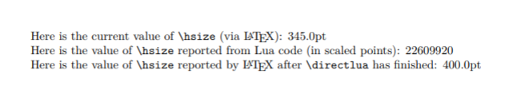

An Introduction to LuaTeX (Part 1): What is it—and what makes it so different?
LuaTeX is a toolkit—it contains sophisticated software tools and components with which you can construct (typeset) a wide range of documents. The sub-title of this article also poses two questions about LuaTeX: What is it—and what makes it so different? The answer to “What is it?” may seem obvious: “It’s a TeX typesetting engine!” Indeed it is, but a broader view, and one to which this author subscribes, is that LuaTeX is an extremely versatile TeX-based document construction and engineering system.
Explaining LuaTeX: Where to start?
The goal of this first article on LuaTeX is to offer a context for understanding what this TeX engine provides and why/how its design enables users to build/design/create a wide range of solutions to complex typesetting and design problems—perhaps also offering some degree of “future proofing” as users increasingly need TeX-based software which is capable of adapting to the ever-changing technical ecosystem. In this author’s opinion, listing and describing its features/capabilities is not necessarily the best place to start out when developing an understanding of LuaTeX’s capabilities and potential. Such an approach won’t be particularly helpful for readers who are not familiar with other TeX engines and for whom feature-based comparisons are unlikely to be especially meaningful.
At the risk of exhausting the reader’s patience (“Just get to the point!”) I’ll be taking a more “holistic” approach, hopefully providing useful background, but at the cost of some additional reading—and delving into a few programming topics to assist with understanding. In Part 2 we explore using \directlua but, for now, we attempt to lay down the basic foundations for understanding LuaTeX.
This article strongly reflects the author’s personal “journey” in developing an understanding and appreciation of LuaTeX: that by first knowing something about the philosophy behind LuaTeX’s development, and seeing it as a container of software tools, you will better appreciate the extensive solution domains opened-up by this amazing software.
LuaTeX: Not just for academia, or mathematics!
The wealth of features and functionality built into LuaTeX not only provide exceptionally high-quality typesetting via traditional LaTeX but they also offer tremendous scope for developing bespoke, non-LaTeX-based, solutions to complex document production and engineering problems. LuaTeX has the powerful Lua scripting language embedded into it, meaning, for example, that you can use Lua to load “plugins” (external software libraries) into LuaTeX; this further enables high levels of automation, integration into existing software systems or workflows and leveraging specialist software for data, text or graphics processing.
Historically, TeX has been associated with scholarly authorship/publishing, especially within mathematics, but LuaTeX, in particular, has significant potential for application within many other domains—including commercial PDF document production. One such example is speedata publisher which uses LuaTeX purely as the PDF-generation engine within its XML-based workflow—it does not use LaTeX at all. Indeed, speedata publisher contains virtually no TeX code—I asked Patrick Gundlach, speedata publisher’s developer, who confirmed that, in total, it uses around three lines of TeX code. Its powerful typesetting capabilities are designed and implemented in Lua code, using LuaTeX’s Lua API (a topic we discuss later in this article).
A short personal story: How I first discovered LuaTeX
I first found out about LuaTeX in late 2009/early 2010 when it was still in mid-beta-release stage (version 0.50). At that time I was looking for TeX-based software to typeset the handwritten notes resulting from my efforts to learn some Arabic. Google searches revealed a collection of videos from the TUG 2009 conference (now on YouTube) which included demonstrations of very high quality Arabic typesetting (via Hans Hagen’s ConTeXt package). Those videos also include a talk entitled The LuaTeX Project: halfway to version 1.
The TeX engine being used to produce that exquisite Arabic typesetting was something called “LuaTeX”. At the time I was working in scientific (physics) publishing but although fully aware of TeX/LaTeX I had not heard of LuaTeX: I was intrigued and wanted to learn more about this new TeX engine. Because LuaTeX was still in the beta development stage, and undergoing rapid development, I wanted to stay current with the very latest updates so the best option (for me) was the do-it-yourself route of building (compiling) the LuaTeX executable from its source code. In addition to the executable LuaTeX program, you also need a “TeX installation” to provide the environment in which to run LuaTeX (e.g., texmf.cnf, macro packages, fonts etc). Rather than downloading and installing the huge TeX Live distribution I opted to create an absolutely minimal custom TeX installation with which to explore LuaTeX (an “interesting” exercise which I documented on my personal blog). Each new release of LuaTeX is accompanied by its Reference Manual (e.g., forversion 1.0.4) which documents the latest features and functionality of the software. However, it is a reference manual and (necessarily) rather light on explanations suitable for the beginner wishing to get started with this incredible TeX engine—a degree of familiarity with low-level TeX concepts is assumed. Given that I had discovered LuaTeX at a relatively early stage in its development, good introductory material was, at that time, relatively hard to find so it took a little exploring, experimentation (and some frustration…) before the pieces began to fall into place. Needless to say, my Arabic studies came to an abrupt halt as I became fascinated by this amazing software and eventually moved into writing LuaTeX plugins for typesetting Arabic instead!
My own “LuaTeX journey” was certainly very non-linear but, along the way, it afforded an opportunity to learn about (Lua)TeX (and TeX installations) “from the ground up”: my blog hosts an eclectic collection of articles based on various topics I explored and worked on during that time. Hopefully, this article makes appropriate use of that time and experience, helping others to become interested to start exploring the capabilities of LuaTeX. LuaTeX continues to be developed and, at the time of writing, it has reached version 1.0.4 which was released with TeX Live 2017. The developers are very active and any bugs discovered are usually fixed soon after being reported—e.g., via the dev-luatex mailing list or via the online LuaTeX bug tracker. Long before it reached version 1.0 LuaTeX was production-capable—although, of course, you needed to accept that features were continually evolving and, on occasion, changes could break your existing TeX code. Today, LuaTeX is, of course, supported by the Overleaf and ShareLaTeX platforms (as LuaLaTeX).
TeX in a changing world: New technologies and workflows
Clearly, TeX engines do not operate within a technologically-static world and, occasionally, innovations arise which are immediate and obvious candidates for inclusion into TeX engines—one such innovation is OpenType variable fonts, which we briefly discuss below. Although there’s little doubt that TeX-based typesetting software is extraordinarily versatile, TeX engines now operate within a rapidly-changing and very diverse software ecosystem—new workflows accentuating the need for integration and the flexibility to implement a wide range of document/typesetting solutions, of which TeX might be just one component.
TeX not only has to stay relevant to its current users but also attract new ones by enabling content-creation solutions which remain useful to incoming generations—people who might not necessarily want to use TeX as a standalone tool but, perhaps, as part of an overall workflow via online collaborative platforms such as Overleaf.
Even a brief perusal of tex.stackexchange demonstrates the huge variety of documents and solutions being produced and implemented with TeX-based software—often displaying incredible ingenuity as people find ever more use-cases and content types they wish to generate. Additionally, the need for workflows which can process TeX-based markup/content to produce non-PDF (and non-DVI) outputs has never been greater—such as MathML/XML and HTML. For example, “converting” TeX into the JATS XML format (long used within academic journal publishing) but also, more recently, the rise of epub used within ebook publishing.
Variable Font Technology—Times They Are A-Changin'
On 14 September 2016, Microsoft, Google, Adobe and Apple announced a new font technology: OpenType variable fonts. We won’t explore this technology in any detail but suffice to say that highly respected font experts such as Thomas Phinney and John Hudson have observed (on Twitter) that variable-font technology is being adopted far faster than many earlier font innovations—quite likely driven by the needs of web designers requiring responsive designs which adapt to the myriad of different screen sizes/resolutions present on mobile devices.
Clearly, OpenType variable fonts is an interesting and exciting development in font technologies, one that TeX users could undoubtedly benefit from—indeed, this question has inevitably been raised on tex.stackexchange with LuaTeX’s support discussed in the LuaTeX mailing list.
In passing, it’s worth noting that font technology predicated on “parametric” font creation is not an entirely new idea: Knuth’s METAFONT and Adobe’s Multiple Master technologies are, in some ways, early progenitors, even if the implementation details are rather different.
Variable fonts: When do we want them—now?
Any new and useful technology standard/specification needs time to “bed into” its target ecosystem of developers and implementers—including time to iron out any ambiguities or interpretations of wordings within the specification itself. Developers have to read, and understand, the documentation and turn it into real working software—which, here, includes creating the fonts and technologies to use them: compatible browsers and typesetting engines. TeX developers will clearly need access to high quality variable fonts that can be used as reliable “benchmarks” for implementing (programming) support for variable-font technologies.
Implementing any new technology within TeX, such as variable fonts, raises the potential need to modify the internals of TeX engines—of course, the need to do that depends upon the nature of that technology and, crucially, which aspect of TeX’s behaviour is being subjected to change. It’s not always necessary to modify TeX engines themselves, perhaps only requiring changes to supporting/ancillary software, including any “components” (third-party libraries of code) used within those programs. Internally, TeX engines are fiendishly complex—developing an understanding of TeX’s source code sufficient to make reliable modifications requires considerable, and highly specialist, expertise (of which there is a very limited supply). It is also essential that any modifications don’t adversely affect the long-term stability/compatibility of TeX engines—which is vital for the TeX community and for those who subsequently process an author’s (La)TeX file(s): most notably academic publishers and cloud-based services such as Overleaf and ShareLaTeX.
Many TeX users are likely to be interested in leveraging variable fonts; for example, implementing new design possibilities or finding solutions to tricky typesetting problems. So, in some sense, there’s a quandary: TeX users wanting access to a new technology but its implementation depends upon a very limited resource: the number of developers qualified and able to make it happen. Modification of TeX’s internals is difficult, and, in general, best avoided wherever possible, so is there another way to approach adding (certain classes) of new features/capabilities to TeX? Yes! and LuaTeX has taken that path.
Early experiments: OpenType variable fonts and LuaTeX
LuaTeX’s design has enabled rapid experimentation with variable font technology. Already, as of April 2017, the ConTeXt TeX format, which uses LuaTeX, had a beta version which implemented OpenType variable fonts. This was possible because ConTeXt’s font support is built in Lua code (and ConTeXt has its own fontloader written in Lua).
LuaTeX: Background and history
LuaTeX is, in TeX terms, “the new kid on the block” despite having been in active development for over 10 years. The LuaTeX web site documents that LuaTeX started life in 2005 with (I believe) active and sustained development beginning in 2006. Due to its inherent complexity, and the diligence of those who built it, LuaTeX really did take 10 years of development for it to reach version 1.0, which was announced by its developers (Hans Hagen, Hartmut Henkel, Taco Hoekwater, Luigi Scarso) on 27 September 2016.
Within that release announcement is an important statement of principle:
“Our main objective is to provide a variant of TeX that permits user extensions without the need to adapt the inner workings.”
This wording perfectly encapsulates the philosophy behind LuaTeX’s development and points to a route through which TeX-based software can address the challenges we have already mentioned: adopting new technologies and remaining relevant to new generations of users.
It’s now time to address the second question contained in this article’s sub-title: “what makes it so different”. By exploring the meaning of “...permits user extensions without the need to adapt the inner workings” we can better understand the essence of what LuaTeX “brings to the table”.
LuaTeX: Opening up TeX’s “black box”
Knuth’s original TeX program is the common ancestor of all modern TeX engines in use today and LuaTeX is, in effect, the latest evolutionary step: derived from the pdfTeX program but with the addition of some powerful software components which bring a great deal of extra functionality. When Knuth wrote the original version of the TeX software he also provided the TeX language as a way to control and program its typesetting behaviour: some 320 low-level commands (primitives) were made available to users and developers of TeX macro packages. Those commands offered varying degrees of control or influence over certain aspects of TeX’s typesetting behaviour but much of TeX’s internal functionality, algorithms, decision-making processes, data and data structures were hidden from the user. Arguably, Knuth’s TeX program was not a totally “black box” but certainly a very dark shade of grey—admittedly, the source code was made available but, for the vast majority of people, that too is a black box of incomprehensibility.
We refer to the internal processes within TeX being somewhat of a “black box”; however, LuaTeX opens up its TeX-based internals to provide users/developers with far greater access to, and control of, many of the once-hidden processes taking place deep inside the TeX engine. LuaTeX also adds many new primitive commands which provide control over the new features.
LuaTeX: Derived from pdfTeX but does not use pdfTeX’s code
For the sake of accuracy, it is important to note that although we described LuaTeX as derived from pdfTeX, LuaTeX does not directly use pdfTeX’s original program code. One of LuaTeX’s developers (Taco Hoekwater) undertook the truly Herculean task of re-writing LuaTeX’s core TeX engine in clean, modern C code (CWEB).
Historical note
Partly due to the age of Knuth’s original TeX source code—from which its modern descendents are derived—modifying it to adapt or create new TeX-based typesetting engines is a complex and convoluted process. Part of that process requires the conversion of Pascal code into C code—which is not without a certain degree of complexity. The resultant machine-generated C code is extraordinarily verbose and very difficult to read or understand. Clearly, having LuaTeX’s code completely rewritten circumvents the entire Pascal-to-C conversion process.
LuaTeX’s building blocks
Within the introduction we made reference to LuaTeX being a “toolkit” and described it as “document construction and engineering system”. We’ve seen that within the LuaTeX 1.0 announcement its developers stated:
“Our main objective is to provide a variant of TeX that permits user extensions without the need to adapt the inner workings.”
It’s now time to pull these threads together and ideas to focus on the details of what this all actually means in practice.
The LuaTeX jigsaw
If you were to look “under the hood” you’d see that the LuaTeX software, i.e., the actual executable program, is constructed from a collection of software components which are combined together to provide LuaTeX’s overall functionality. Of course, this is nothing new and most software is constructed like that. However, what makes LuaTeX different to other TeX engines is that these components are combined in such a way that users are given far greater access to many aspects of TeX’s internal functionality: TeX’s typesetting algorithms, decision-making processes, data and data structures. This opening-up of TeX’s internals enables users to construct new typesetting solutions without the need for modifying the actual TeX engine itself.
The Lua in LuaTeX: A key to the “black box”
Lua is a very powerful, yet easy-to-learn, scripting language which originates from Brazil—it was created in 1993 and is still actively developed. One of Lua’s strengths is its use as a programming language with which to “glue together” disparate software components, allowing you to use them through a simple but versatile scripting language. Lua plays a central role in opening-up the inner workings of the LuaTeX TeX engine, but to better understand how this is achieved, it is worth taking a slight detour to very briefly discuss two programming concepts:
- Application Programming Interface (API);
- programming language binding.
Feel free to skip this section if you are comfortable with those concepts. Neither topic will be covered in any detail—we’re not aiming for strict technical rigour but instead to provide just sufficient background to be aware of these concepts: their meaning and relevance to LuaTeX.
Application Programming Interface (API)
Imagine you are a programmer who has written some code that users (other programmers) might find useful, but your code is complex and you don’t want users of your code having to worry about those low-level details. Note that those programmers/developers are working with the same programming language that you used to write your code. Furthermore, suppose you have plans to re-write some parts of your code—e.g., to make it faster, require less memory and so forth. Existing users of your code shouldn’t need to worry about that: any changes you plan to make should not break their programs. So, what is the solution?
The answer lies in something called an API: an Application Programming Interface. Rather than require users (other programmers) to access the low-level details of your code—which might change—you provide a specific set of functions that other programmers can use. Those functions are an interface to your code, through which other developers can build applications without needing an intimate knowledge of your program’s inner workings. In some ways you can think of this as an additional layer which surrounds your code and “insulates” users from the messy, low-level details.
Provided you don’t change those functions (the interface) you are free to modify and update the lower-level details of your software without affecting (breaking) the work of those who are relying on your code to build their applications: hence the term Application Programming Interface.
APIs: A LaTeX package analogy
When you use commands provided by a LaTeX package you can think of the package’s commands as a form of API. As a user you are not necessarily concerned with the TeX and LaTeX wizardry behind those commands (i.e., in the package’s code): all you want is to make use of the functionality they provide.
Programming language binding
We’ve seen that programmers who write/publish a body of useful code (called a library) can provide a so-called Application Programming Interface (a set of functions) through which other programmers, using the same programming language, can make use of that library (collection of code). This is fine when both sides (library developer and its users) use the same programming language, but what happens if programmers using a different programming language also want to make use of that library? For example, you might write scripts using the Lua language but want to make use of a library written in, for example, programming languages such as C/C++. Somehow, the two different programming languages (Lua and C/C++) need the ability to “communicate” with each other. One solution to this problem is so-called language binding.
Examining the technical details of language binding is outside the scope of this article so we’ll give a concise summary of the general principles. In essence, by adding a suitable additional “layer” of code to the original library it can “communicate” with another programing language (such as Lua): that layer of code is called a binding. It enables the two languages to interoperate via an API via which programmers in the second language (such as Lua) can use to access the features/services provided by the library.
Figure 1: Schematic diagram to show the concept of a language binding: enabling a program written in Lua to use an external library written in another programming language. It is through the use of Lua bindings that the internal components of LuaTeX, and thus much of LuaTeX’s internal typesetting functionality, is made available for users to develop solutions to complex typesetting problems.
LuaTeX: Two options for programming—TeX and Lua
Essentially, LuaTeX is a TeX engine that supports two programming languages: the traditional TeX-based language and the Lua scripting language. Of course, you can use both languages in the same TeX document or, should you prefer, continue to typeset through the TeX-only route: for example, via the LaTeX (LuaLaTeX) macro package. TeX (or LaTeX) is not an easy programming language to use or learn, and relatively few people have truly mastered TeX’s many idiosyncrasies—TeX’s concepts of tokens and expansion are quite alien to the majority of people’s expectations and experiences of a programming language.
The addition of Lua opens up the ability to use TeX-based typesetting via a much more accessible and conventional programming language—as noted near the start of this article, by using the Lua API you can perform sophisticated typesetting with virtually no TeX code.
LuaTeX adds many new primitives
Every TeX engine provides hundreds of so-called primitive commands: the fundamental building blocks of the TeX-based language supported by each individual typesetting engine. The original version of TeX released by Donald Knuth provided approximately 320 commands but newer TeX engines (pdfTeX, XeTeX and LuaTeX) have each added many new primitives to provide users with access to each engine’s additional features and functionality. LuaTeX’s considerable number of new primitives are documented in its Reference Manual.
Among the many new primitives introduced by LuaTeX is once called \directlua{...} which is the gateway to using Lua code: accessing the internals of the LuaTeX engine to build sophisticated typesetting tools and solutions.
\directlua{...}: The gateway to Lua programming
As discussed, the Lua scripting language can be viewed as providing a “layer” through which it is possible to gain access to LuaTeX’s TeX-based typesetting engine and the functionality provided by many of the components from which LuaTeX is constructed. The Lua language is also the mechanism which enables LuaTeX’s extensibility—through Lua’s ability to load specialist external libraries of software/code.
Collectively, the Lua interface (set of Lua-based functions) provided by LuaTeX is referred to as its Lua API: it is the “communications link” between LuaTeX’s internal engine/components and the user’s document.
A simple example of \directlua{...}
The following extremely simple example does not even begin to scratch the surface of the tip of the iceberg of possibilities. However, it serves to demonstrate the basic idea of the interplay between the “TeX way” and the “Lua way” of accessing TeX’s parameters.
Note that:
\hsizeis a TeX primitive (command) which sets the value of an internal parameter that determines the width of typeset lines—for example, you usually set it to a suitable value within a\vbox{...}.\hsizeis just one of many TeX parameters that you can access and/or modify by Lua code.- Accessing TeX parameters is just one tiny aspect of LuaTeX’s Lua API: there is so much more!
\documentclass{article}
\begin{document}
\let\\\relax %redefine meaning of \\ to avoid expansion problems
Here is the current value of {\ttfamily\string\hsize} (via \LaTeX):
\the\hsize\par
\directlua{
%Get the current value of \hsize using the Lua API
local hs=tex.hsize
% Use a Lua API function to print some
% LaTeX code and the value of \hsize
tex.print("Here is the value of {\\ttfamily\\string\\hsize}
reported from Lua code (in scaled points): ")
tex.print(hs.."\\par")
% Set a new value for \hsize using the Lua aPI
tex.hsize="400pt" % or use tex.hsize=400*65536 (in scaled points)
}%
% After \directlua has finished, ask LaTeX
% to tell us the new value of \hsize
Here is the value of {\ttfamily\string\hsize} reported
by \LaTeX{} after {\tt\string\directlua} has finished:
\the\hsize\par
\end{document}
Here is an image which shows the result of LuaTeX typesetting the LaTeX code (above):

Note that the TeX “trickery” of \let\\\relax is to avoid problems caused by LuaTeX’s “expansion” of the Lua code: a topic we briefly note below.
Using Lua code
There are two main options for using Lua code in your TeX/LaTeX documents:
- Inline: Writing Lua code directly within your
.texdocument (as in the example above); - External: Storing Lua code in external
.luacode files and using Lua’s facilities to load and run them.
Option (1) is most suited to shorter fragments of Lua code. Option (2) is used for larger programs or libraries of Lua code. It has a distinct advantage that you can avoid tricky issues involving TeX’s so-called \catcode values (which can be “rather frustrating”). The reason for these \catcode issues is the “expansion” of Lua code prior to being fed into LuaTeX’s built-in Lua interpreter. This expansion can be tricky to understand so we’ll explore in further in a subsequent article.
Of course there are LaTeX packages to assist with using Lua code in your .tex files—for example, you can use the luacode package.
Summary and introducing Part 2 of this article
The software components from which LuaTeX is constructed, together with the embedded Lua scripting language, provide a powerful combination for building solutions capable of solving a wide range of complex typesetting problems—and engineering document-production workflows which can benefit from close integration with a TeX-based typesetting engine. In Part 2 of this article we take an in-depth look at the most powerful command provided by LuaTeX: \directlua.
Until then, Happy LuaTeXing!
Acknowledgements
The author is extremely grateful to Luigi Scarso, one of LuaTeX’s developers, for taking time to read a draft of this article and making a number of very helpful comments and suggestions. Any remaining errors of fact, or omission, are, of course, the author’s. In addition, I would like to thank Patrick Gundlach, developer of speedata publisher, for his time to answer my questions.
Overleaf guides
- Creating a document in Overleaf
- Uploading a project
- Copying a project
- Creating a project from a template
- Using the Overleaf project menu
- Including images in Overleaf
- Exporting your work from Overleaf
- Working offline in Overleaf
- Using Track Changes in Overleaf
- Using bibliographies in Overleaf
- Sharing your work with others
- Using the History feature
- Debugging Compilation timeout errors
- How-to guides
- Guide to Overleaf’s premium features
LaTeX Basics
- Creating your first LaTeX document
- Choosing a LaTeX Compiler
- Paragraphs and new lines
- Bold, italics and underlining
- Lists
- Errors
Mathematics
- Mathematical expressions
- Subscripts and superscripts
- Brackets and Parentheses
- Matrices
- Fractions and Binomials
- Aligning equations
- Operators
- Spacing in math mode
- Integrals, sums and limits
- Display style in math mode
- List of Greek letters and math symbols
- Mathematical fonts
- Using the Symbol Palette in Overleaf
Figures and tables
- Inserting Images
- Tables
- Positioning Images and Tables
- Lists of Tables and Figures
- Drawing Diagrams Directly in LaTeX
- TikZ package
References and Citations
- Bibliography management with bibtex
- Bibliography management with natbib
- Bibliography management with biblatex
- Bibtex bibliography styles
- Natbib bibliography styles
- Natbib citation styles
- Biblatex bibliography styles
- Biblatex citation styles
Languages
- Multilingual typesetting on Overleaf using polyglossia and fontspec
- Multilingual typesetting on Overleaf using babel and fontspec
- International language support
- Quotations and quotation marks
- Arabic
- Chinese
- French
- German
- Greek
- Italian
- Japanese
- Korean
- Portuguese
- Russian
- Spanish
Document structure
- Sections and chapters
- Table of contents
- Cross referencing sections, equations and floats
- Indices
- Glossaries
- Nomenclatures
- Management in a large project
- Multi-file LaTeX projects
- Hyperlinks
Formatting
- Lengths in LaTeX
- Headers and footers
- Page numbering
- Paragraph formatting
- Line breaks and blank spaces
- Text alignment
- Page size and margins
- Single sided and double sided documents
- Multiple columns
- Counters
- Code listing
- Code Highlighting with minted
- Using colours in LaTeX
- Footnotes
- Margin notes
Fonts
Presentations
Commands
Field specific
- Theorems and proofs
- Chemistry formulae
- Feynman diagrams
- Molecular orbital diagrams
- Chess notation
- Knitting patterns
- CircuiTikz package
- Pgfplots package
- Typesetting exams in LaTeX
- Knitr
- Attribute Value Matrices
Class files
- Understanding packages and class files
- List of packages and class files
- Writing your own package
- Writing your own class